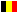
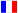
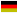

With Settings you change the appearance of the panel and of the component bar. The settings window appears in the middle of the panel and has three tabs: General, Switch Elements and Hints.
You see the change right away on the panel or in the component bar. When you close the settings window, the settings are saved (see Saving the settings).
| Button | What does it do? |
|---|---|
| Save INI | Saves the settings of the current tab in an INI file of your choice, for example as a backup. |
| Load default settings | Resets the settings of the tab to the last saved values. |
| Language choice | The drop-down list at the top: the language of the names in the list. |
| Info | Shows a short explanation of the tab. |
| Capture | Copies a picture of the settings window to the clipboard. |
| Close | Closes the settings window and saves the settings. |
Settings of the panel itself.
| Setting | What does it do? |
|---|---|
| Header (Titel) | The title above the panel, for example “Logic Panel”. |
| Color Panel (Color) | The background colour of the panel. |
| Color Input, Color Processing, Color Output | The colour of the three bars Input, Processing and Output at the top of the panel. |
| Grid Yes/No (ShowGrid) | Shows or hides the grid dots. |
| Color Dots (DotColor) | The colour of the grid dots. |
| Grid spacing X and Y (GridX, GridY) | The distance between the grid dots in pixels: X horizontally, Y vertically. |
| Copy screen (Capture) | When True, you drag a rectangle on the panel with the mouse; that part is saved in the image type below. While this is on, selecting several components does not work. |
| Image type (SavePicFormat) | sfClipbrd: to the clipboard.
sfPNG, sfJPG or sfBMP: as the file SelectedRegion in the program’s
working folder. |
Here you choose for each component whether its button is in the component bar: True shows it, False hides it. Connection is the button for laying wires.
For each component, the text of the hint that appears when you hold the mouse over its button in the component bar. Show hint (ShowHint) turns these hints on or off.
The hint texts follow the chosen language. If you choose another language or restart Logic, the default texts of that language come back. Your own text is therefore temporary.
When you close the settings window, Logic automatically saves the settings in the
ini folder (next to the program). They apply again at the next start.
| Tab | File |
|---|---|
| General | defaultgrid.ini |
| Switch Elements | defaultschakel.ini |
With Save INI you can also keep a copy under another name.
On the right of the status bar you choose the program language with the flags:
| Flag | Language |
|---|---|
 | Nederlands |
| English | |
 | Français |
 | Deutsch |
The buttons, hints, menus and this help switch along. The choice is remembered.